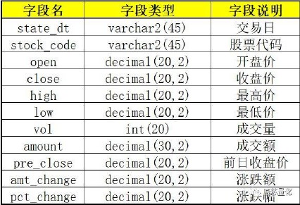

作者：Tushare社区用户
本系列主要介绍一套比较简单且完备的量化框架，该框架基于现代投资组合理论，并应用主流的机器学习算法进行分析，旨在帮助大家拓展量化投资的思路，辅助构建科学合理的投资策略。
作为系列第一篇，根据分析和计算流程，本篇主要介绍三部分：数据采集，数据预处理，利用SVM算法进行建模。
本系列的量化框架，全部采用本地化计算。为什么要本地化计算呢，因为相比在线获取数据进行分析计算，本地化计算有如下优势：
我们进行本地化计算，首先要做的，就是将所需的基础数据采集到本地数据库里，本篇的示例源码采用的数据库是MySQL5.5，数据源是tushare pro接口。
我们现在要取一批特定股票的日线行情，部分代码如下：
# 设置tushare pro的token并获取连接
ts.set_token('xxxxxxxxxxxxxxxxxxxxxxxxxxxxxxxxx')
pro = ts.pro_api()
# 设定获取日线行情的初始日期和终止日期，其中终止日期设定为昨天。
start_dt = '20100101'
time_temp = datetime.datetime.now() - datetime.timedelta(days=1)
end_dt = time_temp.strftime('%Y%m%d')
# 建立数据库连接,剔除已入库的部分
db = pymysql.connect(host='127.0.0.1', user='root', passwd='admin', db='stock', charset='utf8')
cursor = db.cursor()
# 设定需要获取数据的股票池
stock_pool = ['603912.SH','300666.SZ','300618.SZ','002049.SZ','300672.SZ']
total = len(stock_pool)
# 循环获取单个股票的日线行情
for i in range(len(stock_pool)):
try:
df = pro.daily(ts_code=stock_pool[i], start_date=start_dt, end_date=end_dt)
# 打印进度
print('Seq: ' + str(i+1) + ' of ' + str(total) + ' Code: ' + str(stock_pool[i]))
上述代码的注释部分已将每行代码的功能解释清楚了，实际上数据采集的程序主要设置三个参数：获取行情的初始日期，终止日期，以及股票代码池。
当我们获取数据后，就要往本地数据库进行写入（存储）操作了，本篇代码用的是SQL语言，需提前在数据库内建好相应的表，表配置和表结构如下：
库名：stock 表名：stock_all

其中 state_dt 和 stock_code 是主键和索引。state_dt 的格式是 ‘yyyy-mm-dd’（例：'2018-06-11'）。这样的日期格式便于查询，且在MySQL内部能够进行大小比较。
（完整的数据采集代码详见 Init_StockAll_Sp.py 文件）
无论是量化策略还是单纯的机器学习项目，数据预处理都是非常重要的一环。以机器学习的视角来看，数据预处理主要包括数据清洗，排序，缺失值或异常值处理，统计量分析，相关性分析，主成分分析（PCA），归一化等。本篇所要介绍的数据预处理比较简单，只是将存在本地数据库的日线行情数据整合成一份训练集数据，以用于后续的机器学习建模和训练。
在介绍具体的示例代码之前，我们需要先思考一个问题，应用有监督学习的算法对个股进行建模，我们的输入数据有哪些，我们期望得到的输出数据又是什么？
这个问题的答案因人而异，因策略而异。这个问题本身是将市场问题转化为数学问题的一个过程。依赖的是量化宽客自己的知识体系和对市场的理解。
回到正题，本篇示例我们将以最简单的数据进行分析，我们输入端的数据是个股每日基础行情，输出端数据是股价相较前一交易日的涨跌状态。简单点说就是，我们向模型输入今天的基础行情，让模型预测明天股价是涨还是跌。
在代码实现方式上，我们采用面向对象的思想，将整个数据预处理过程和结果，封装成一个类，每次创建一个类实例，就得到了特定条件下的一份训练集。示例代码如下：
class data_collect(object):
def __init__(self, in_code,start_dt,end_dt):
ans = self.collectDATA(in_code,start_dt,end_dt)
def collectDATA(self,in_code,start_dt,end_dt):
# 建立数据库连接，获取日线基础行情(开盘价，收盘价，最高价，最低价，成交量，成交额)
db = pymysql.connect(host='127.0.0.1', user='root', passwd='admin', db='stock', charset='utf8')
cursor = db.cursor()
sql_done_set = "SELECT * FROM stock_all a where stock_code = '%s' and state_dt >= '%s' and state_dt <= '%s' order by state_dt asc" % (in_code, start_dt, end_dt)
cursor.execute(sql_done_set)
done_set = cursor.fetchall()
if len(done_set) == 0:
raise Exception
self.date_seq = []
self.open_list = []
self.close_list = []
self.high_list = []
self.low_list = []
self.vol_list = []
self.amount_list = []
for i in range(len(done_set)):
self.date_seq.append(done_set[i][0])
self.open_list.append(float(done_set[i][2]))
self.close_list.append(float(done_set[i][3]))
self.high_list.append(float(done_set[i][4]))
self.low_list.append(float(done_set[i][5]))
self.vol_list.append(float(done_set[i][6]))
self.amount_list.append(float(done_set[i][7]))
cursor.close()
db.close()
# 将日线行情整合为训练集(其中self.train是输入集，self.target是输出集，self.test_case是end_dt那天的单条测试输入)
self.data_train = []
self.data_target = []
最终这个类实例化后是要整合出三个数据：
（完整的数据预处理代码详见 DC.py 文件）
机器学习中有诸多有监督学习算法，SVM是比较常见的一种，本例采用SVM算法进行建模。关于SVM的理论原理本篇不做详述，以下仅从实践角度进行建模介绍。
先贴一段建模、训练并进行预测的代码大家感受一下：）
model = svm.SVC() # 建模
model.fit(train, target) # 训练
ans2 = model.predict(test_case) # 预测
三行代码，让人想起了把大象装冰箱分几步的冷笑话……
不过这侧面也说明Python在数据挖掘方面的强大之处：简单，方便，好用。
本例用的机器学习框架是scikit-learn。是个非常强大的算法库，熟悉算法原理的朋友可以查阅官方API文档，可修改模型参数，进一步调优模型；亦可尝试其他算法比如决策树，逻辑回归，朴素贝叶斯等。
（完整的SVM建模代码详见 SVM.py 文件）
最后，我们虽然顺利建模并作出预测，但仍面对两个主要问题：1.模型预测能力如何？或者说该如何评估一个模型的质量？2.该如何结合模型进行仓位管理？风险如何？如何量化？